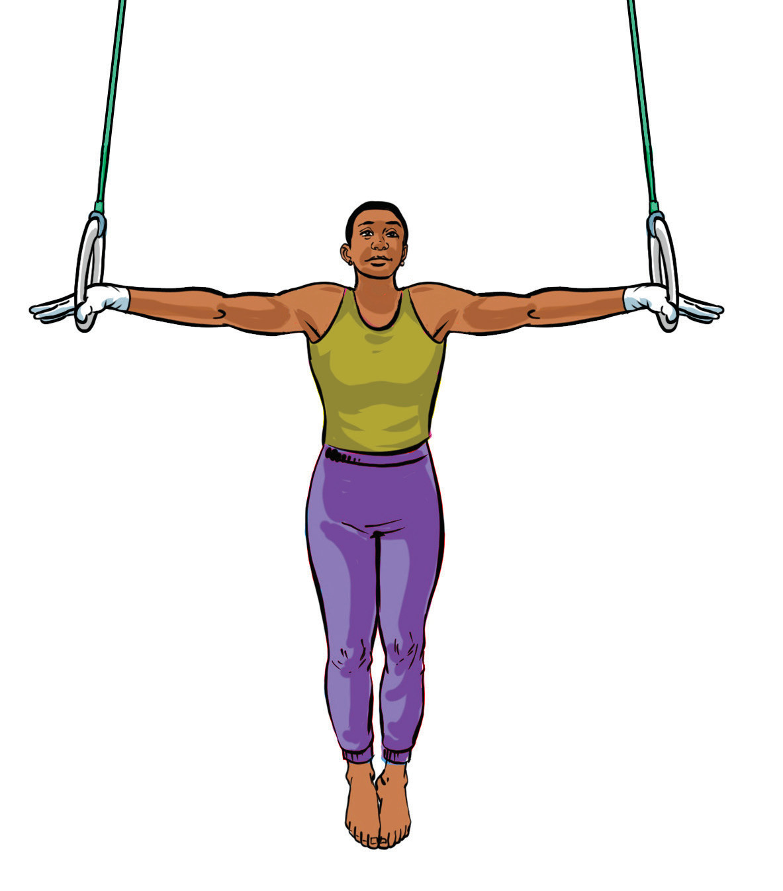

(vii) Repeat the above steps until you perfect the iron cross on the ring.

Figure 4.37(a): Iron cross holding on the ring
(b)
Support hold: A gymnastic routine, where the gymnast holds the body weight with straight arms supported by the rings, maintaining a stable posture while hanging on the ring. The following steps will help you practice support hold on ring:
(i)
Stand between the rings while adjusting the rings to waist height;
(ii)
Hold one ring in each hand with your palms facing inward;
(iii)
Use your legs to jump slightly and lift your body off the ground;
(iv)
Keep your arms locked straight beside your body, Figure 4.37(b);
(v)
Hold your legs together and stay upright with your core (stomach muscles) tight;
(vi)
Remain still and balanced for a few seconds without swinging; and
(vii)
Repeat the above steps until you perfect the support hold on the ring.